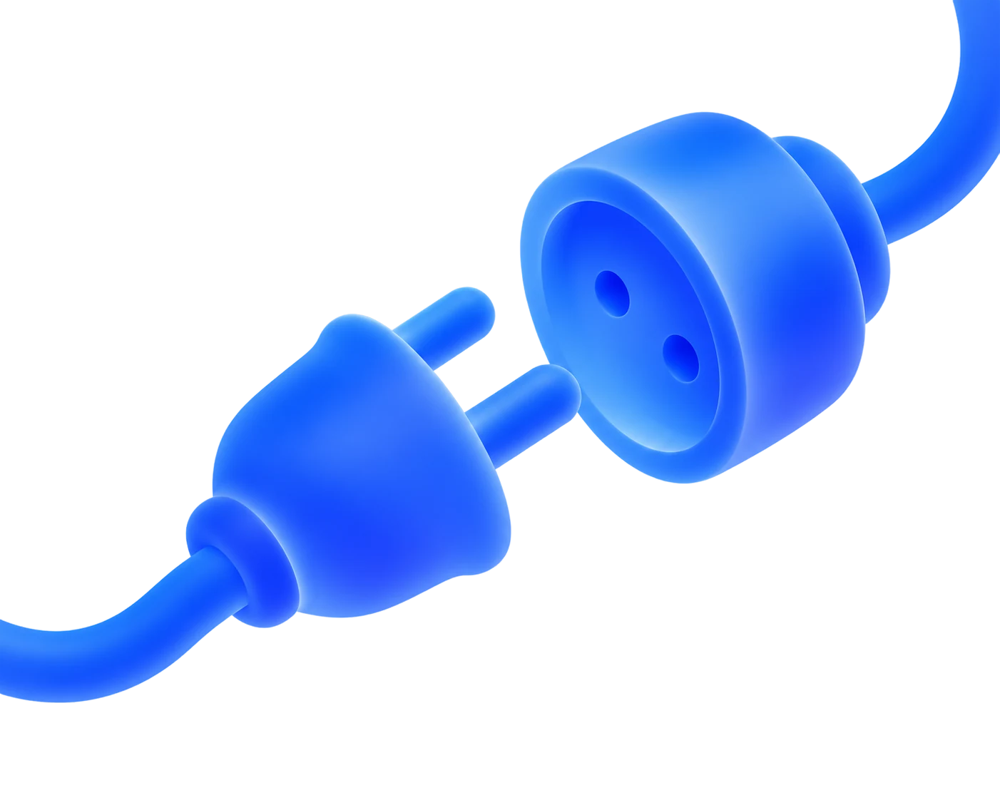
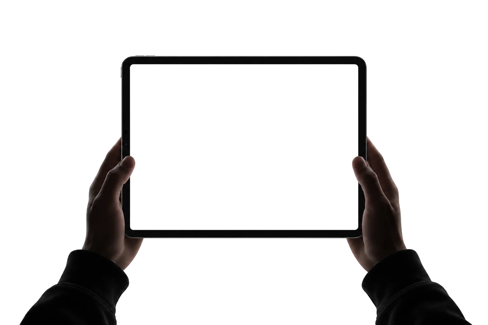
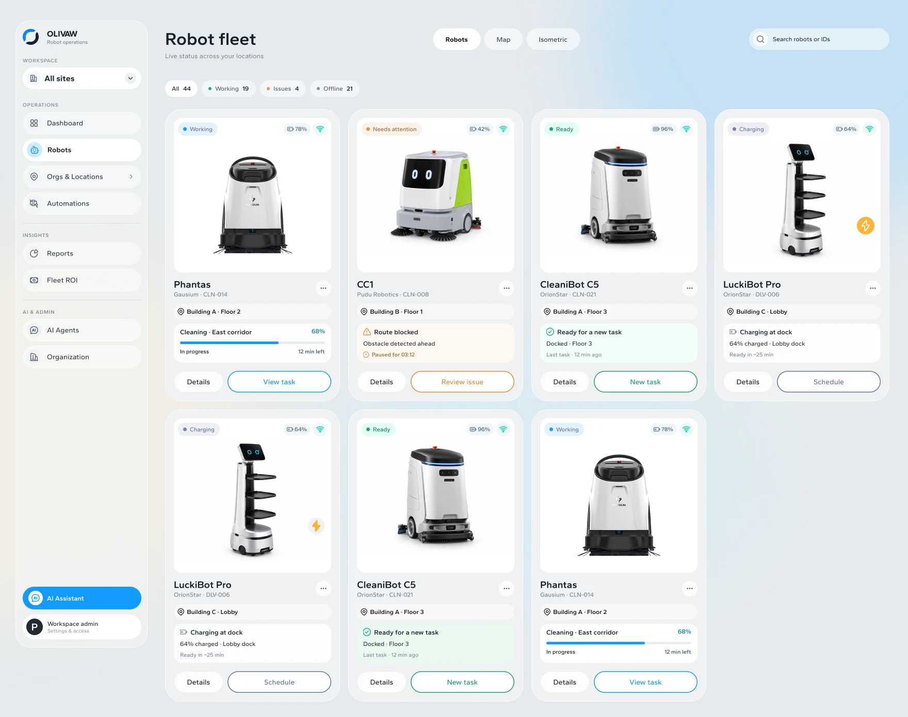
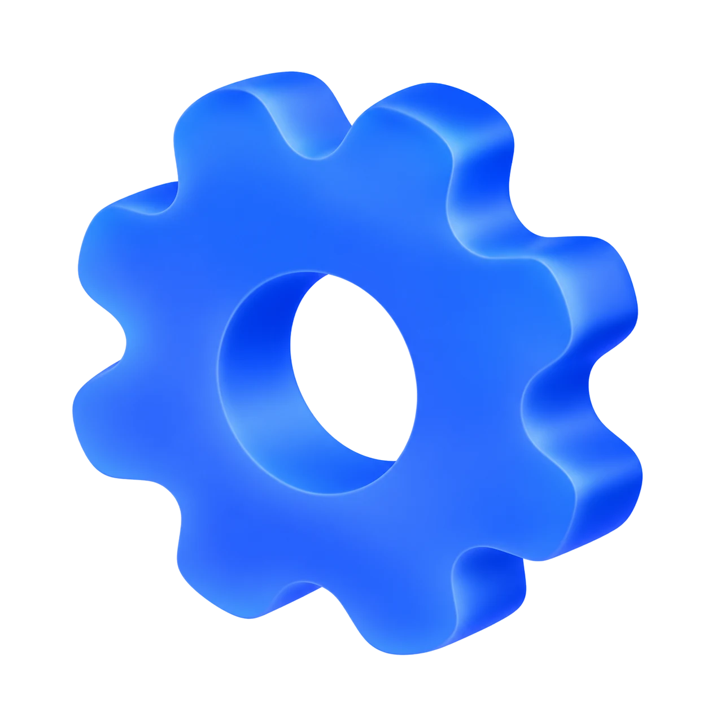
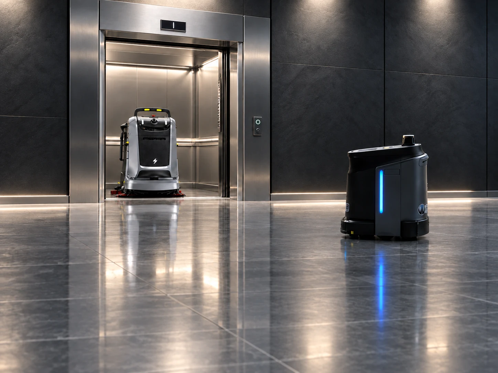
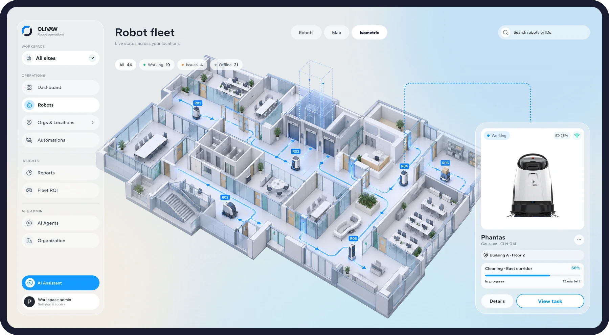
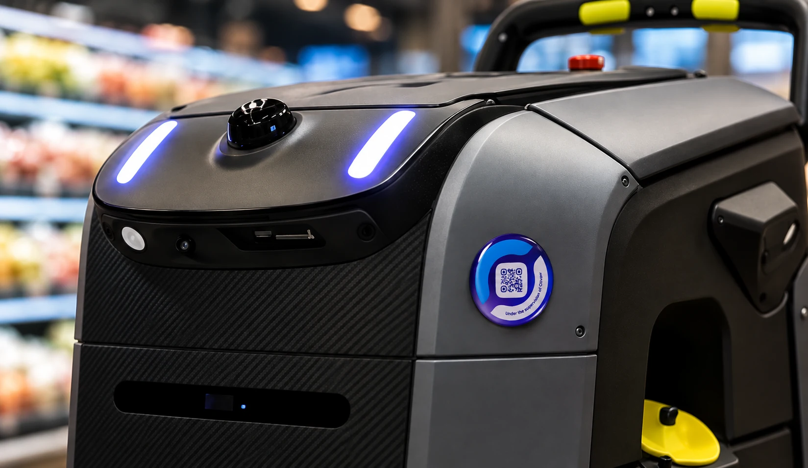
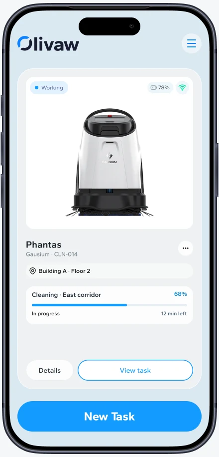

ConnectOne fleet.
Multiple brands.
Bring compatible robots from different manufacturers into one system. Connect them with elevators, doors and building infrastructure.
Robot fleet orchestration
Connect robots across brands and building systems.
Monitor your fleet, manage tasks and unlock new skills
— all from one platform.


Monitor robots from different manufacturers, track tasks
and spot issues in real time — all from one dashboard.
Platform capabilities
Connect robots from different manufacturers, manage daily operations, and expand their capabilities — all through one platform.

ConnectBring compatible robots from different manufacturers into one system. Connect them with elevators, doors and building infrastructure.

ControlMonitor robot status, tasks and issues across locations. See what needs attention and take action from one workspace.
Expand what supported robots can do with software skills, AI-powered workflows and new integrations.
The platform
A robot doesn’t work in isolation. Olivaw connects robots, building systems and everyday operations in one place.
Connect supported robots from different manufacturers in one workspace.
Link robots with elevators, doors and other site systems.
Coordinate tasks, locations and issues across your fleet.
Extend workflows and add capabilities as your needs grow.

Olivaw connects robots with elevators, doors, and building systems — coordinating movement, tasks, and operations across the entire site.
Robot fleet orchestration
See where your robots are, follow their routes, and manage tasks across your building — all in one intuitive workspace.
Bring compatible robots from different manufacturers into one system. Connect them with elevators, doors and building infrastructure.
Monitor robot status, tasks and issues across locations. See what needs attention and take action from one workspace.
Expand what supported robots can do with software skills, AI-powered workflows and new integrations.

Live locationsKnow where your robots are and what they’re doing.
Routes & tasksTrack movement, assigned routes, and task progress.
Robot statusSee what’s working, charging, or needs attention.

Field service
The idea is simple: a QR code connects each physical robot to its digital profile. Teams can check what’s happening and take action on-site, without searching through the entire fleet.

Scan the QR code to instantly access the robot’s profile.
See its location, battery level, and current task progress.
View task details or assign a new task directly from your phone.
Questions & answers
Every setup is different. Let’s see how Olivaw could work with yours.
Olivaw is designed for mixed-vendor fleets. Compatibility depends on the models and available integrations.
Olivaw connects through supported building integrations so robots can request access, share destinations and continue tasks.
Yes. Teams can organize fleets by site while keeping status, tasks and issues visible in one workspace.
Alerts surface the affected robot, its location and current state so the right person can respond quickly.
Supported skills and automations can be added as workflows evolve, without replacing the whole fleet.
Timing depends on the robot models, building systems and number of sites. We map the integrations first and then plan a staged rollout.
Yes. Operations, facilities and service teams can work from the same fleet view while focusing on the information relevant to them.
Task history can help teams review completed work, understand recurring issues and improve day-to-day fleet planning.
Requirements vary by robot and integration. During setup, we review site connectivity and identify anything needed for reliable operation.
Absolutely. A fleet can begin at one site and expand to additional locations as compatible robots, workflows and teams are added.